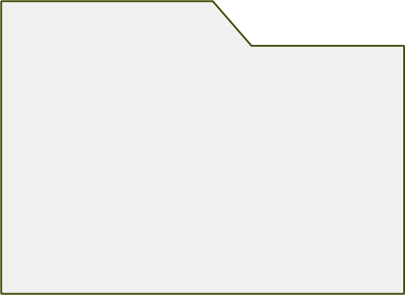
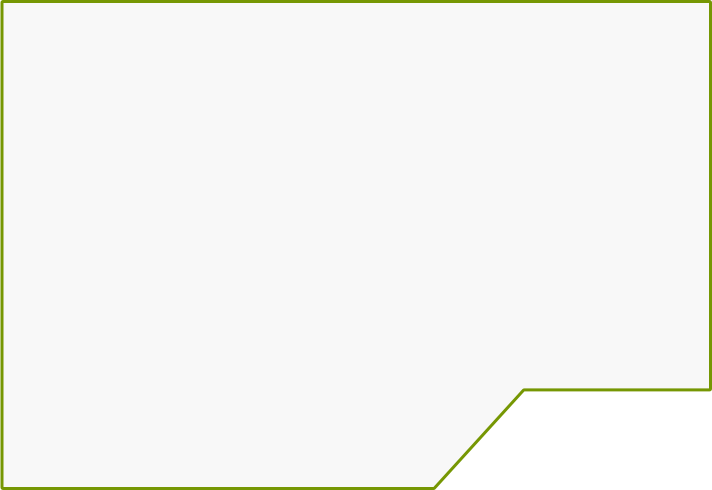
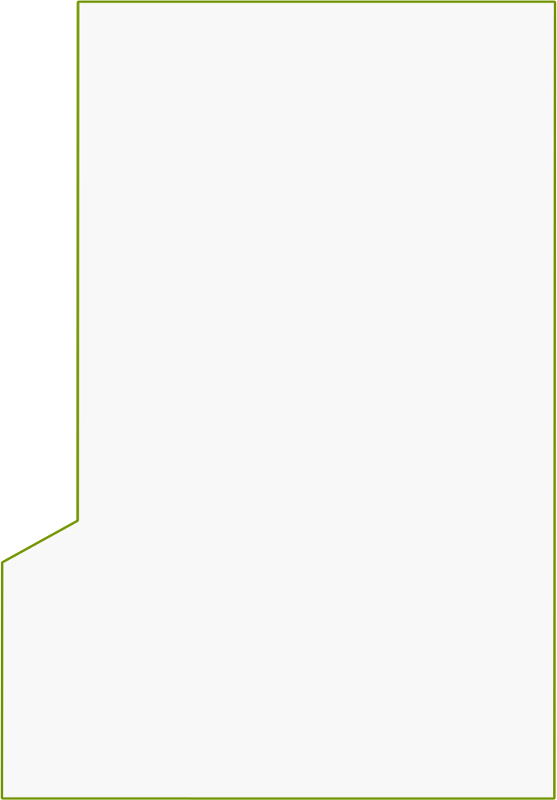
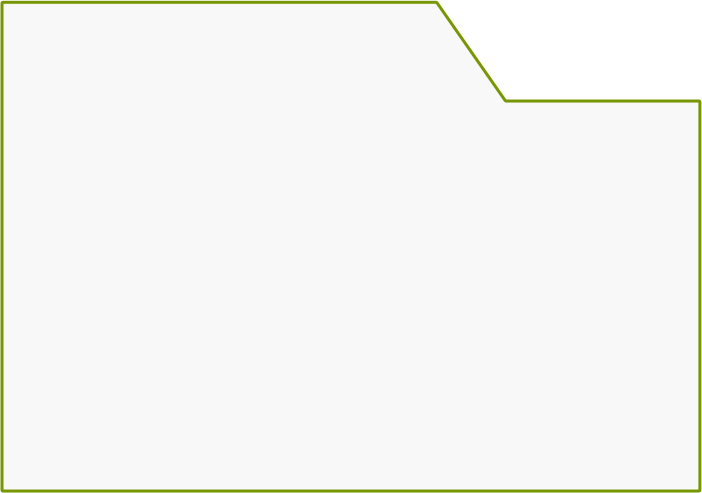
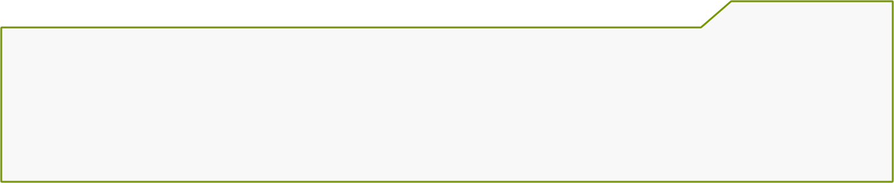
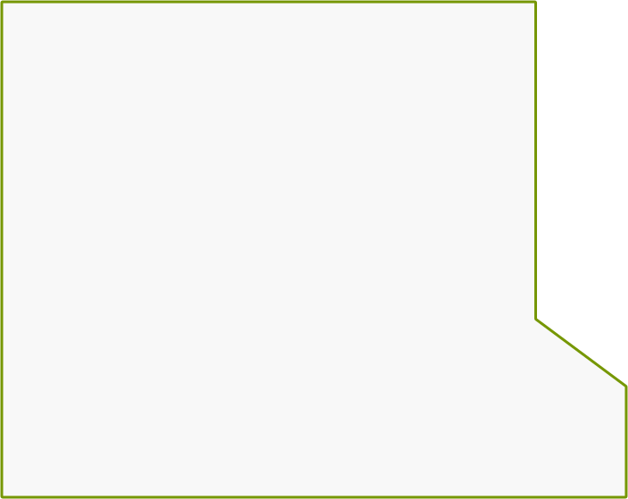
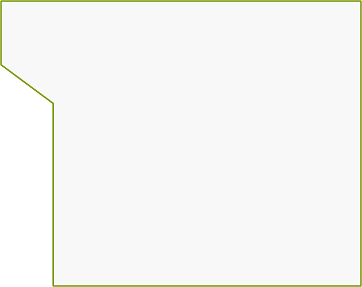

3D | réalité virtuel
Le Bureau des 4 chats
Lina trouva un vieux livre poussiéreux dans le grenier de sa grand-mère. En l'ouvrant, des mots dorés brillaient : "Lis à haute voix et découvre." Elle lut. Tout autour d'elle changea, la pièce s'évanouit. Elle était maintenant dans une forêt enchantée, entourée de créatures magiques.



- création d'object 3D
- enrichisement de l'environnement
- animation d'environnement
méthode

Ce projet représente ma première expérience de fusion entre l'animation 3D et 2D, avec l'exploration de la technologie à 360 degrés. J'ai choisi de créer un espace compact, mais rempli de détails cachés, visibles uniquement en prenant le temps de regarder dans toutes les directions, que ce soit au plafond, à gauche ou à droite. Mon objectif était de construire un univers virtuel vivant et interactif dans une courte vidéo.
Dans cette présentation, je vais vous expliquer ma méthode de travail, le temps investi, ainsi que les défis que j'ai rencontrés et les solutions que j'ai trouvées. Pour conclure, je vous montrerai le résultat final de ce projet : ma vidéo, qui reflète cette démarche innovante.

- moi
- soi-même
- je
crédit

Dans cette section, je vais vous parler des défis que j'ai rencontrés lors de ce travail. Dans les sections suivantes, je détaillerai comment j'ai résolu ces problèmes et les bénéfices qui en ont découlé. Mon plus grand défi a été la mise en place de mon projet, ainsi que la sous-estimation de la charge de travail nécessaire pour atteindre pleinement mes objectifs. Pour vous donner un peu plus de contexte, au début, je souhaitais créer une bibliothèque avec une multitude d'animations, comme un livre qui vole et des personnages qui marchent, afin de donner vie à cet espace. Cependant, mes compétences ont rapidement montré leurs limites et le temps a commencé à me manquer
Dans cette section, je vais vous parler des défis que j'ai rencontrés lors de ce travail. Dans les sections suivantes, je détaillerai comment j'ai résolu ces problèmes et les bénéfices qui en ont découlé. Mon plus grand défi a été la mise en place de mon projet, ainsi que la sous-estimation de la charge de travail nécessaire pour atteindre pleinement mes objectifs. Pour vous donner un peu plus de contexte, au début, je souhaitais créer une bibliothèque avec une multitude d'animations, comme un livre qui vole et des personnages qui marchent, afin de donner vie à cet espace. Cependant, mes compétences ont rapidement montré leurs limites et le temps a commencé à me manquer

résolution
J'ai résolu ce problème de la manière la plus simple que j'ai trouvée : j'ai éliminé les éléments superflus et transformé la bibliothèque en bureau, tout en réduisant les répétitions. J'ai également introduit des rouleaux de parchemin comme variables pour diversifier l'environnement. De plus, j'ai ajouté une cheminée et un chandelier qui compensaient la lumière que j'avais perdue en abandonnant l'idée de la bibliothèque.

Apprentissage
Ce que j'ai appris de cette expérience, c'est l'importance de voir grand tout en étant conscient de mes capacités réelles. J'ai également découvert comment tirer parti des ressources disponibles et j'ai renforcé ma gestion du temps. J'ai compris qu'il vaut mieux achever un projet de qualité que de se lancer dans un travail trop ambitieux et rester à moitié fini.